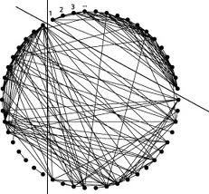
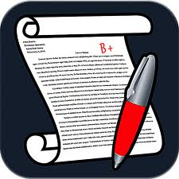

OPTIMIZED AUTOMATED ESSAY GRADER

Overall Score
| GRADE (0-5) | 2.77 |
|---|---|
| Spelling(0-5) | 4.99 |
| Grammar(0-5) | 1.36 |
| Coherence(0-5) | 1.97 |

Essay Statistics
| Word Count | 474 |
|---|---|
| Sentence Count | 22 |
| Paragraph Count | 11 |
| Average Sentence Length | 21.55 |
| Standard Deviation from the Average Sentence Length | 6.21 |

Spellings
Number of Misspelt Words ::1
Score :: 4.99
| Misspelt Word | Spelling Suggestions |
|---|---|
| pixelated | ['pix elated', 'pix-elated', 'peculated', 'exalted', 'pleated', 'pelted', 'plated', 'percolated', 'proselyted', 'piloted', 'fixated', 'populated', 'exulted', 'pulsated', 'isolated', 'plaited', 'platted', 'pixel', 'pleaded'] |

Grammar
Score :: 1.36
| Sentences | Score |
|---|---|
| A message addressed to Clara from an unknown sender, inviting her on a journey through time and technology. | 4 |
| Here, Clara discovered the stories of the future told by sentient machines and holographic storytellers. | 3 |
| The landscape was dotted with pixelated trees, and streams of data flowed like rivers through the binary meadows. | 3 |
| Curiosity sparked in Clara's eyes as she accepted the invitation. | 3 |
| Yet, this typewriter held a secret – a mysterious connection to the digital realm. | 3 |
| It was a relic from a bygone era, seemingly out of place in a world dominated by sleek gadgets and cutting-edge devices. | 3 |
| In the heart of Clara's home, an ancient typewriter sat proudly on her antique writing desk. | 3 |
| Technology Once upon a time in a small town nestled between rolling hills, there lived an elderly woman named Clara. | 3 |
| The town became a living testament to the harmony between humanity and technology, proving that the two could coexist in a dance as eternal as time itself. | 2 |
| The townspeople, initially skeptical of the merging worlds, soon embraced the beauty of this coexistence. | 2 |
| Orion guided Clara through a virtual library that stored the collective knowledge of humankind, each book a testament to the eternal dance between tradition and innovation. | 2 |
| Its keys clacked away on their own, typing a message that seemed to materialize from the ethereal realms of the internet. | 2 |
| Clara was known for her timeless tales and wisdom, but what set her apart was a peculiar piece of technology that had become an integral part of her life. | 2 |
| In this enchanted realm, Clara's typewriter became a magical conduit, translating her timeless tales into digital narratives that resonated across generations. | 1 |
| One stormy night, as the rain tapped rhythmically on Clara's window pane, the typewriter came to life. | 1 |
| As the years passed, Clara's typewriter continued to weave its magic, ensuring that the town's rich history and traditions seamlessly blended with the boundless possibilities of the future. | 0 |
| Clara, now a revered storyteller in both the physical and digital realms, became a living legend. | 0 |
| She marveled at the fusion of nature and technology, where robotic birds chirped alongside their living counterparts, and holographic flowers bloomed in a dazzling array of colors. | 0 |
| With a flash of light, she found herself transported into a digital wonderland, where technology and nostalgia coexisted harmoniously. | 0 |
| The once quaint town transformed into a hub of creativity, where holographic art adorned the streets, and robotic companions brought joy to the elderly. | -1 |
| And so, the story of Clara and her typewriter became a legend, whispered among the digital winds, reminding everyone that, in the tapestry of life, every keystroke leaves an indelible mark on the fabric of existence. | -2 |
| As Clara ventured deeper, she encountered a wise AI guardian named Orion, who explained that technology, when harnessed wisely, could create a bridge between the past, present, and future. | -4 |

Coherence
Score :: 1.97
| Sentences | Score |
|---|---|
| Clara was known for her timeless tales and wisdom, but what set her apart was a peculiar piece of technology that had become an integral part of her life. | 1 |
| Yet, this typewriter held a secret – a mysterious connection to the digital realm. | 1 |

Essay
Technology
Once upon a time in a small town nestled between rolling hills, there lived an elderly woman named Clara. Clara was known for her timeless tales and wisdom, but what set her apart was a peculiar piece of technology that had become an integral part of her life.
In the heart of Clara's home, an ancient typewriter sat proudly on her antique writing desk. It was a relic from a bygone era, seemingly out of place in a world dominated by sleek gadgets and cutting-edge devices. Yet, this typewriter held a secret – a mysterious connection to the digital realm.
One stormy night, as the rain tapped rhythmically on Clara's window pane, the typewriter came to life. Its keys clacked away on their own, typing a message that seemed to materialize from the ethereal realms of the internet. A message addressed to Clara from an unknown sender, inviting her on a journey through time and technology.
Curiosity sparked in Clara's eyes as she accepted the invitation. With a flash of light, she found herself transported into a digital wonderland, where technology and nostalgia coexisted harmoniously. The landscape was dotted with pixelated trees, and streams of data flowed like rivers through the binary meadows.
Here, Clara discovered the stories of the future told by sentient machines and holographic storytellers. She marveled at the fusion of nature and technology, where robotic birds chirped alongside their living counterparts, and holographic flowers bloomed in a dazzling array of colors.
As Clara ventured deeper, she encountered a wise AI guardian named Orion, who explained that technology, when harnessed wisely, could create a bridge between the past, present, and future. Orion guided Clara through a virtual library that stored the collective knowledge of humankind, each book a testament to the eternal dance between tradition and innovation.
In this enchanted realm, Clara's typewriter became a magical conduit, translating her timeless tales into digital narratives that resonated across generations. The townspeople, initially skeptical of the merging worlds, soon embraced the beauty of this coexistence.
The once quaint town transformed into a hub of creativity, where holographic art adorned the streets, and robotic companions brought joy to the elderly. Clara, now a revered storyteller in both the physical and digital realms, became a living legend.
As the years passed, Clara's typewriter continued to weave its magic, ensuring that the town's rich history and traditions seamlessly blended with the boundless possibilities of the future. The town became a living testament to the harmony between humanity and technology, proving that the two could coexist in a dance as eternal as time itself.
And so, the story of Clara and her typewriter became a legend, whispered among the digital winds, reminding everyone that, in the tapestry of life, every keystroke leaves an indelible mark on the fabric of existence.
Once upon a time in a small town nestled between rolling hills, there lived an elderly woman named Clara. Clara was known for her timeless tales and wisdom, but what set her apart was a peculiar piece of technology that had become an integral part of her life.
In the heart of Clara's home, an ancient typewriter sat proudly on her antique writing desk. It was a relic from a bygone era, seemingly out of place in a world dominated by sleek gadgets and cutting-edge devices. Yet, this typewriter held a secret – a mysterious connection to the digital realm.
One stormy night, as the rain tapped rhythmically on Clara's window pane, the typewriter came to life. Its keys clacked away on their own, typing a message that seemed to materialize from the ethereal realms of the internet. A message addressed to Clara from an unknown sender, inviting her on a journey through time and technology.
Curiosity sparked in Clara's eyes as she accepted the invitation. With a flash of light, she found herself transported into a digital wonderland, where technology and nostalgia coexisted harmoniously. The landscape was dotted with pixelated trees, and streams of data flowed like rivers through the binary meadows.
Here, Clara discovered the stories of the future told by sentient machines and holographic storytellers. She marveled at the fusion of nature and technology, where robotic birds chirped alongside their living counterparts, and holographic flowers bloomed in a dazzling array of colors.
As Clara ventured deeper, she encountered a wise AI guardian named Orion, who explained that technology, when harnessed wisely, could create a bridge between the past, present, and future. Orion guided Clara through a virtual library that stored the collective knowledge of humankind, each book a testament to the eternal dance between tradition and innovation.
In this enchanted realm, Clara's typewriter became a magical conduit, translating her timeless tales into digital narratives that resonated across generations. The townspeople, initially skeptical of the merging worlds, soon embraced the beauty of this coexistence.
The once quaint town transformed into a hub of creativity, where holographic art adorned the streets, and robotic companions brought joy to the elderly. Clara, now a revered storyteller in both the physical and digital realms, became a living legend.
As the years passed, Clara's typewriter continued to weave its magic, ensuring that the town's rich history and traditions seamlessly blended with the boundless possibilities of the future. The town became a living testament to the harmony between humanity and technology, proving that the two could coexist in a dance as eternal as time itself.
And so, the story of Clara and her typewriter became a legend, whispered among the digital winds, reminding everyone that, in the tapestry of life, every keystroke leaves an indelible mark on the fabric of existence.
Leleih K. Emmanuel
Natural Language Processing enthusiast
Natural Language Processing enthusiast